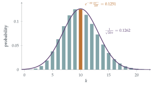

STEP II 2016, Question 13
Read the question before you go on. It is in the STEP Support Programme’s question database: step.maths.org/questions/16-s2-q13
The hook
How big is \(100!\)? Multiplying out takes a while: it has \(158\) digits. Stirling’s formula, \(n! \approx \sqrt{2\pi n}\,(n/e)^n\), gives it to within \(0.1\%\) in a single line. It is one of the most useful approximations in mathematics, used constantly in probability, statistical physics and the analysis of algorithms.
There are many proofs, using integrals (Section 4.4) or the Euler–Maclaurin formula. This question gives the most surprising one: a proof by probability. The Poisson distribution with mean \(n\) is approximately normal, and comparing the two at the peak forces the value of \(n!\). The \(\sqrt{2\pi}\) in Stirling’s formula is literally the \(\sqrt{2\pi}\) in the normal density.
Before you start
If a discrete random variable \(X\) with mean \(\mu\) and variance \(\sigma^2\) is approximately normal, roughly what is \(\mathrm{P}(X = \mu)\)? (Think of the probability of an interval of width \(1\) centred at \(\mu\).)
\(\mathrm{P}(X = \mu) \approx \mathrm{P}(\mu - \frac12 < X < \mu + \frac12)\) for the normal approximation, which is about the width \(1\) times the density at the peak: \(\frac{1}{\sigma\sqrt{2\pi}}\).
Working it through
Stage 1 Sixteen coins
\(X \sim \mathrm{B}(16, \frac12)\) has mean \(8\) and variance \(16 \cdot \frac12 \cdot \frac12 = 4\), so \(\sigma = 2\). By the normal approximation, \[\mathrm{P}(X = 8) \approx \frac{1}{2\sqrt{2\pi}} \approx 0.1995.\] The exact value is \(\binom{16}{8}/2^{16} = \frac{12870}{65536} \approx 0.1964\), within \(2\%\).
Stage 2 The central binomial coefficient
For \(\mathrm{B}(2n, \frac12)\), what are the mean and standard deviation? Write \(\mathrm{P}(X = n)\) exactly and approximately.
The mean is \(n\) and the variance \(\frac n2\), so \(\sigma = \sqrt{n/2}\). Exactly, \(\mathrm{P}(X = n) = \binom{2n}{n}\frac{1}{2^{2n}}\); approximately, \(\frac{1}{\sqrt{n/2}\sqrt{2\pi}} = \frac{1}{\sqrt{\pi n}}\). Equating, \[\frac{(2n)!}{(n!)^2\,2^{2n}} \approx \frac{1}{\sqrt{\pi n}}, \qquad (2n)! \approx \frac{2^{2n}(n!)^2}{\sqrt{n\pi}}. \qed\]
Stage 3 Stirling’s formula
A Poisson distribution with parameter \(n\) has mean and variance both equal to \(n\). Write \(\mathrm{P}(X = n)\) exactly and approximately.
Exactly, \(\mathrm{P}(X = n) = e^{-n}\frac{n^n}{n!}\). For large \(n\) the Poisson distribution is approximately normal (it is the sum of \(n\) independent Poisson\((1)\) variables), with \(\sigma = \sqrt n\), so \(\mathrm{P}(X = n) \approx \frac{1}{\sqrt{2\pi n}}\). Equating, \[n! \approx \sqrt{2\pi n}\,e^{-n}n^n. \qed\]

Looking back
Probability at a point \(\approx\) density times width. For a lattice distribution, the normal density at a point approximates the probability of that point.
An exact formula meets an approximation. The binomial and Poisson probabilities are exact; equating them to their normal approximations gave estimates for factorials.
Choose the distribution to fit the formula. \(\binom{2n}{n}\) suggested \(\mathrm{B}(2n, \frac12)\); \(\frac{n^n}{n!}\) suggested Poisson\((n)\).
What’s really going on
How good is the approximation?
This argument is a heuristic: it uses the normal approximation at a single point, which the usual central limit theorem does not justify. A rigorous version, the local central limit theorem, does exactly that, and makes this a genuine proof. Stirling’s formula is in fact remarkably accurate: the ratio \(\frac{n!}{\sqrt{2\pi n}(n/e)^n}\) is about \(1 + \frac{1}{12n}\), so even for \(n = 1\) it gives \(0.92\) instead of \(1\), and for \(n = 10\) it is \(0.8\%\) too small. The full series, \(1 + \frac{1}{12n} + \frac{1}{288n^2} - \cdots\), is an example of an asymptotic series: it gives better and better approximations for large \(n\), but for fixed \(n\) it eventually diverges.
Why factorials and normals are linked
The \(\sqrt{2\pi}\) in Stirling’s formula and in the normal density are the same constant, because \(\int_{-\infty}^\infty e^{-x^2/2}\,\mathrm{d}x = \sqrt{2\pi}\). Abraham de Moivre found the normal approximation to the binomial in 1733 in exactly this way, needing an approximation to \(\binom{n}{k}\) for large \(n\); he found the form \(n! \approx Cn^{n + 1/2}e^{-n}\) but not the constant. James Stirling showed that \(C = \sqrt{2\pi}\). The normal distribution was born from the asymptotics of factorials.
Abraham de Moivre, a French Protestant who fled to London and earned a living tutoring and advising gamblers, published The Doctrine of Chances in 1718 and found the normal approximation to the binomial in a pamphlet of 1733, the first appearance of the normal curve. James Stirling, a Scottish mathematician, published the value of the constant in his Methodus Differentialis (1730), and de Moivre generously credited him. The approximation of factorials is still an active subject: computing \(n!\) for huge \(n\) is needed in combinatorics and cryptography.
The thinking skill
An exact probability, compared with an approximation, can give information about the numbers in the formula.
This “probabilistic method” runs both ways. Here probability gave an estimate for factorials; Erdős used it to prove the existence of graphs (Section 9.2). At university you will see probability used to prove theorems in analysis, number theory and combinatorics.
Try this next
Check the formula. Use Stirling’s formula to estimate \(10!\) and \(20!\), and compare with the true values \(3\,628\,800\) and \(2\,432\,902\,008\,176\,640\,000\).
From (iii) to (ii). Show that Stirling’s formula in part (iii) implies the approximation in part (ii).
Digits of \(100!\). Use \(\log_{10}n! \approx n\log_{10}\frac ne + \frac12\log_{10}(2\pi n)\) to show that \(100!\) has \(158\) digits.
A tie in coin tossing. Use part (ii) to show that the probability of exactly \(500\) heads in \(1000\) tosses of a fair coin is about \(0.025\).
Further reading
William Feller, An Introduction to Probability Theory and Its Applications, Vol. 1 (Wiley), Chapter II, which proves Stirling’s formula.
Ronald Graham, Donald Knuth & Oren Patashnik, Concrete Mathematics (Addison-Wesley), Chapter 9, on asymptotics.
Stephen Stigler, The History of Statistics (Harvard University Press), on de Moivre and the birth of the normal curve.